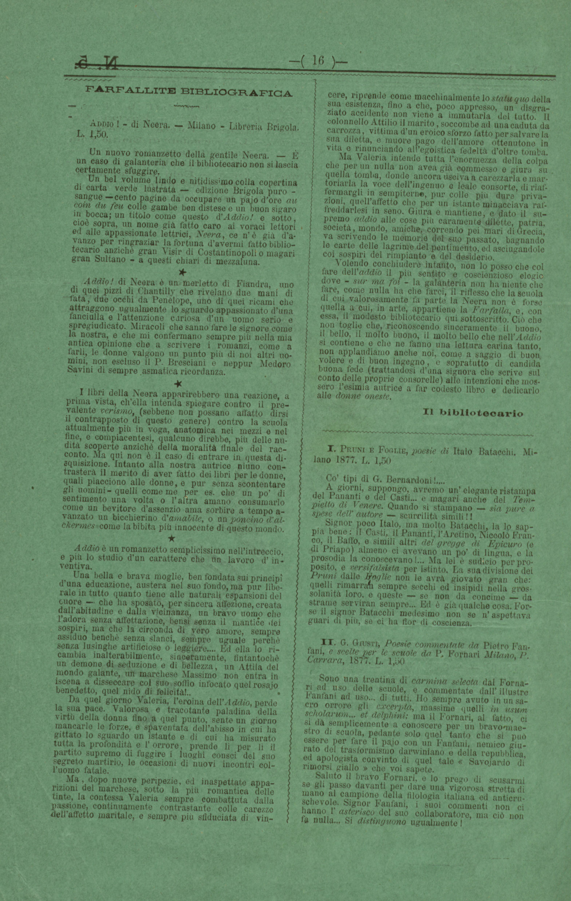

Pagina 163137px × 4947px
colonna 1
FARFALLITE BIBLIOGRAFICA
ADDIO! - di Neera. — Milano - Libreria Brigola. L. 1,50.
Un nuovo romanzetto della gentile Neera. — È un caso di galanteria che il bibliotecario non si lascia certamente sfuggire.
Un bel volume lindo e nitidissimo colla copertina di carta verde lustrata — edizione Brigola puro sangue — cento pagine da occupare un pajo d’ore au coin du feu colle gambe ben distese e un buon sigaro in bocca; un titolo come questo d’Addio! e sotto, cioè sopra, un nome già fatto caro ai voraci lettori ed alle appassionate lettrici, Neera, ce n’è già d’a vanzo per ringraziar la fortuna d’avermi fatto biblio tecario anzichè gran Visir di Costantinopoli o magari gran Sultano — a questi chiari di mezzaluna.
Addio! di Neera è un merletto di Fiandra, uno di quei pizzi di Chantilly che rivelano due mani di fata, due occhi da Penelope, uno di quei ricami che attraggono ugualmente lo sguardo appassionato d’una fanciulla e l’attenzione curiosa d’un uomo serio e spregiudicato. Miracoli che sanno fare le signore come la nostra, e che mi confermano sempre più nella mia antica opinione che a scrivere i romanzi, come a farli, le donne valgono un punto più di noi altri uo mini, non escluso il P. Bresciani e neppur Medoro Savini di sempre asmatica ricordanza.
I libri della Neera apparirebbero una reazione, a prima vista, ch’ella intenda spiegare contro il pre valente verismo, (sebbene non possano affatto dirsi il contrapposto di questo genere) contro la scuola attualmente più in voga, anatomica nei mezzi e nel fine, e compiacentesi, qualcuno direbbe, più delle nu dità scoperte anziché della moralità finale del rac conto. Ma qui non è il caso di entrare in questa di squisizione. Intanto alla nostra autrice niuno con trasterà il merito di aver fatto dei libri per le donne, quali piacciono alle donne, e pur senza scontentare gli uomini — quelli come me per es. che un po’ di sentimento una volta o l’altra amano consumarlo come un bevitore d’assenzio ama sorbire a tempo a vanzato un bicchierino d’amabile, o un poncino d’al ckermes come la bibita più innocente di questo mondo.
Addio è un romanzetto semplicissimo nell’intreccio, e più lo studio d’un carattere che un lavoro d’in ventiva.
Una bella e brava moglie, ben fondata sui principi d’una educazione, austera nel suo fondo, ma pur libe rale in tutto quanto tiene alle naturali espansioni del cuore — che ha sposato, per sincera affezione, creata dall’abitudine e dalla vicinanza, un bravo uomo che l’adora senza affettazione, bensì senza il mantice dei sospiri, ma che la circonda di vero amore, sempre assiduo benchè senza slanci, sempre uguale perchè senza lusinghe artificiose o leggiere.... Ed ella lo ri cambia inalterabilmente, sinceramente, fintantochè un demone di seduzione e di bellezza, un Attila del mondo galante, un marchese Massimo non entra in iscena a disseccare col suo soffio infocato quel rosajo benedetto, quel nido di felicità!..
Da quel giorno Valeria, l’eroina dell’Addio, perde la sua pace. Valorosa e tracotante paladina della virtù della donna fino a quel punto, sente un giorno mancarle le forze, e spaventata dell’abisso in cui ha gittato lo sguardo un istante e di cui ha misurato tutta la profondità e l’orrore, prende lì per lì il partito supremo di fuggire i luoghi consci del suo segreto martirio, le occasioni di nuovi incontri col l’uomo fatale.
Ma, dopo nuove peripezie, ed inaspettate appa rizioni del marchese, sotto la più romantica delle tinte, la contessa Valeria sempre combattuta dalla passione, continuamente contrastante colle carezze dell’affetto maritale, e sempre più sfiduciata di vin colonna 2cere, riprende come macchinalmente lo statu quo della sua esistenza, fino a che, poco appresso, un disgra ziato accidente non viene a immutarla del tutto. Il colonnello Attilio il marito, soccombe ad una caduta da carrozza, vittima d’un eroico sforzo fatto per salvare la sua diletta, e muore pago dell’amore ottenutone in vita e rinunciando all’egoistica fedeltà d’oltre tomba.
Ma Valeria intende tutta l’enormezza della colpa che per un nulla non avea già commesso e giura su quella tomba, donde ancora usciva a carezzarla e mar toriarla la voce dell’ingenuo e leale consorte, di riaf fermargli in sempiterno, pur colle più dure priva zioni, quell’affetto che per un istante minacciava raf freddarlesi in seno. Giura e mantiene, e dato il su premo addio alle cose più caramente dilette, patria, società, mondo, amiche, correndo pei mari di Grecia, va scrivendo le memorie del suo passato, bagnando le carte delle lagrime del pentimento, ed asciugandole coi sospiri del rimpianto e del desiderio.
Volendo conchiudere intanto, non lo posso che col fare dell’addio il più sentito e coscienzioso elogio dove — sur ma foi — la galanteria non ha niente che fare, come nulla ha che farci, il riflesso che la scuola di cui valorosamente fa parte la Neera non è forse quella a cui, in arte, appartiene la Farfalla, e, con essa, il modesto bibliotecario qui sottoscritto. Ciò che non toglie che, riconoscendo sinceramente il buono, il bello, il molto buono, il molto bello che nell’Addio si contiene e che ne fanno una lettura carina tanto, non applaudiamo anche noi, come a saggio di buon volere e di buon ingegno, e soprattutto di candida buona fede (trattandosi d’una signora che scrive sul conto delle proprie consorelle) alle intenzioni che mos sero l’esimia autrice a far codesto libro e dedicarlo alle donne oneste.